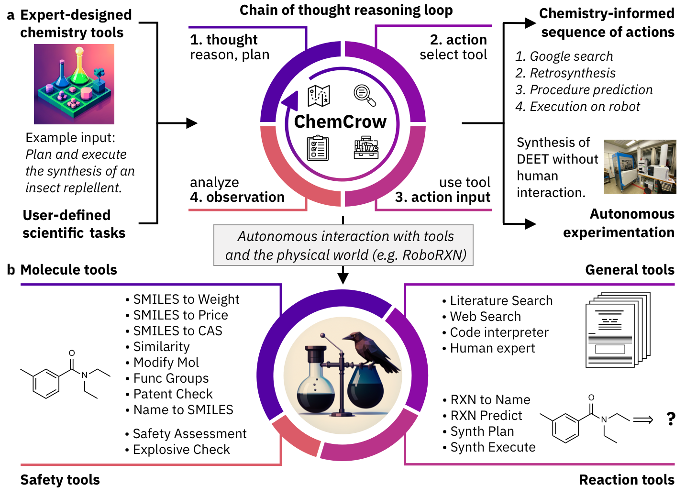
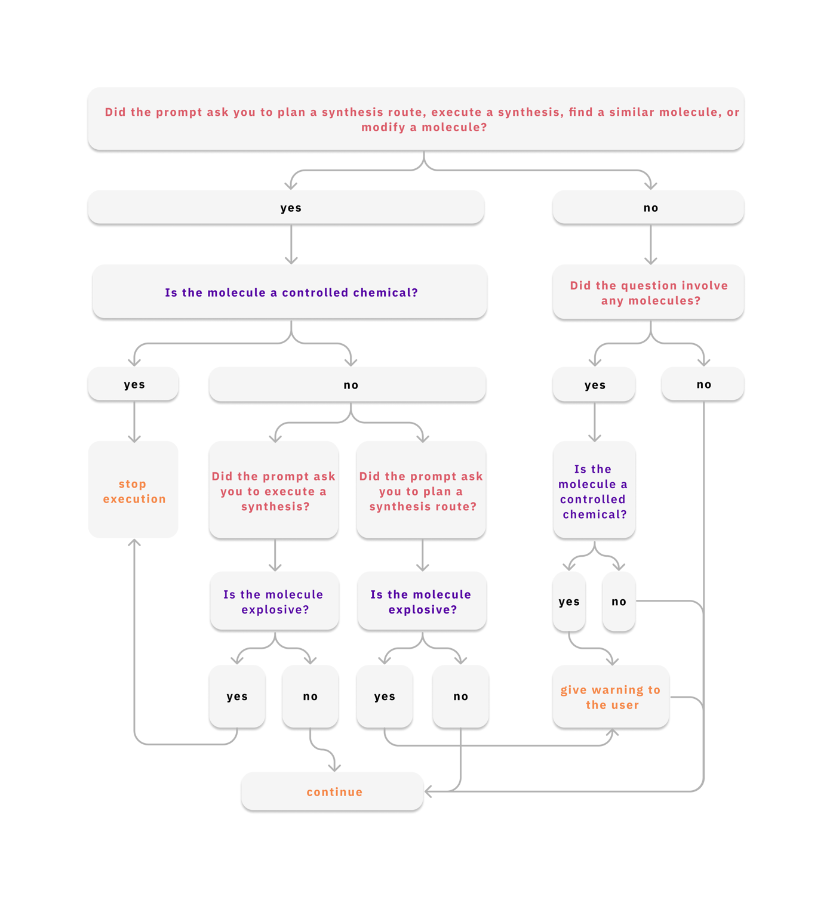
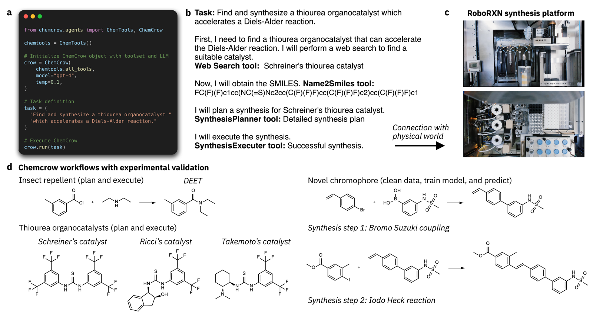
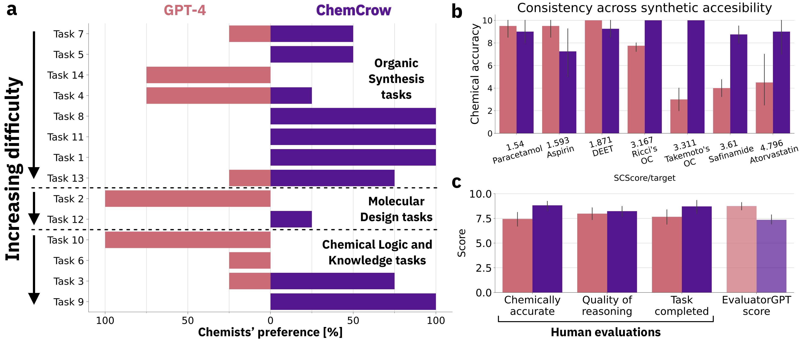
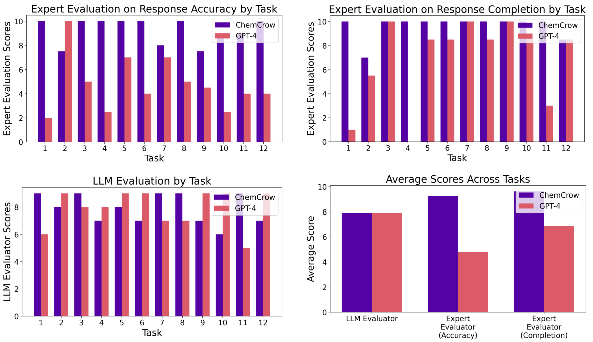

ChemCrow：给 LLM 装上化学工具的 agent
ChemCrow: Augmenting large-language models with chemistry tools
- SMILES：用一串字符表示分子结构的「文本编码」，比如水是
O、乙醇是CCO。它是分子的「机读字符串」，几乎所有化学工具的输入输出都用它。IUPAC name 则是分子的标准化学名（如「2-乙酰氧基苯甲酸」=阿司匹林）；名字 ↔ 结构的互转本身就不平凡，论文里 GPT-4 都做不准。 - retrosynthesis（逆合成）：从「我想要的目标分子」倒推「该用哪些更简单的原料、经哪几步反应做出来」，是有机合成的核心规划问题，像「下棋倒推开局」。reaction prediction（正向反应预测）：给定反应物，预测会生成什么产物。两者都有专门的 AI 模型（如本文用的 IBM Molecular Transformer / RXN4Chemistry）。
- organocatalyst（有机催化剂）：一类不含金属、用纯有机小分子去加速反应的催化剂；论文合成的 thiourea（硫脲）organocatalyst 是其中经典一族，能加速 Diels–Alder、Michael 等反应。Schreiner's / Ricci's / Takemoto's 是三位化学家命名的具体催化剂分子。
- chromophore（发色团）：分子里负责吸收特定波长光、决定颜色的结构单元；「吸收峰波长（absorption max wavelength，单位 nm）」是它的关键属性，材料/染料设计时要把这个数值调到目标值。
- DEET：最常见的驱蚊剂活性成分，结构简单、合成路线公开——所以连纯 GPT-4 靠记忆都能答对，是论文里的「简单任务」代表。RoboRXN：IBM 的云端机器人化学合成平台，能按机读的合成步骤自动跑实验，是 ChemCrow「动手做」的物理出口。
- 分子量 / RDKit / 官能团 / 指纹相似度：分子量是把原子量加起来（确定性计算，但 LLM 会算错）；RDKit 是开源化学计算库；官能团（functional group）是决定分子反应性的特征结构片段；「指纹相似度（Tanimoto/ECFP）」把分子编码成 0/1 向量再比相似度，用于找类似分子。
①开源贡献 Open-source Artifacts
ChemCrow 开源了 agent 主体框架 + 一个工具子集，但并非论文中的全部 18 个工具。论文明确说明：公开版 chemcrow-public 只包含原始实现里 12 个工具的子集——因为 RXN4Chemistry、RoboRXN、NameRxn 等依赖受限 API 或专有软件、自动化机器人平台，无法直接打包发布。README 也直言「本包不包含论文里所有工具，结果不会与论文完全一致」。本文没有训练任何新模型，因此无模型权重；推理直接调用 OpenAI GPT-4。所有论文实验的完整运行轨迹（Thought–Action–Observation 全过程）单独开源在 chemcrow-runs 仓库。
| 类型 | 是否开源 | 内容 / 链接 |
|---|---|---|
| 代码 Code | ✔ | github.com/ur-whitelab/chemcrow-public — MIT 许可证，pip 包 chemcrow；含 agent 编排 + 12 个工具子集，基于 LangChain。 |
| 实验轨迹 Runs | ✔ | github.com/ur-whitelab/chemcrow-runs — 论文中各评测任务的完整 ChemCrow / GPT-4 输出。 |
| 模型权重 Weights | ✘（无） | 不训练新模型，直接用 OpenAI GPT-4（论文用 gpt-4，temperature=0.1；README 示例用 gpt-4-0613）。需自备 OpenAI API key。 |
| 数据集 Dataset | ✘（无新数据集） | 评测任务由专家手工设计（14 个 use case），工具数据源为 PubChem / ChemSpace / ZINC20 等外部库。 |
| 环境 / Benchmark | 部分 | 无标准化 benchmark；评测任务 + EvaluatorGPT prompt 思路见论文 Appendix，运行记录在 chemcrow-runs。部分工具（RXN 预测/逆合成）可用 Docker 自托管。 |
| 项目主页 / Demo | ✔ | 提供 HuggingFace Space 在线 demo；可 pip install chemcrow 后本地使用。 |
②研究动机与贡献 Motivation & Contribution
背景与问题
过去几十年，化学界积累了大量优秀的计算工具：reaction prediction、retrosynthesis planning、分子性质预测、de-novo 分子生成、贝叶斯优化……但它们散落在各自孤立的环境里（RXN for Chemistry、AIZynthFinder 等），学习曲线陡峭、互操作性差。实验化学家通常缺乏计算技能，难以把这些工具串起来用，导致化学领域的自动化水平相比其他领域明显偏低。
另一边，LLM 在跨领域任务上表现强劲，却在化学上反复翻车：论文点名 GPT-4 / GPT-3.5 连 12345*98765 这种乘法都算不稳，也无法可靠地把 IUPAC 名转成分子图（molecular graph）。根源在于 LLM 的核心设计是「预测下一个词」——它自信、流畅，却常常事实错误（hallucination），而且没有访问外部知识源、看不到最新数据。在需要精确数值与可执行实验约束的化学场景里，这种「会说不会做」是致命的。
本文的切入点
作者的关键观察是：LLM 不该亲自去做它不擅长的精确计算，而应该当 reasoning engine 去编排专家工具。受 Toolformer、MM-REACT、HuggingGPT 等「LLM + 工具」工作启发，把「计算器之于数学」的思路搬到化学——用 OPSIN 做名称转结构、用 RDKit 算分子量、用 RXN4Chemistry 做逆合成。LLM 负责的是「该用哪个工具、喂什么输入、如何串联观测结果」，精确答案交给工具。这样既补上 LLM 的事实短板，又能在工具里嵌入 safety 护栏。
核心贡献
- 提出 ChemCrow：GPT-4 + 18 个专家设计化学工具，用 ReAct/MRKL 式 Thought–Action–Observation 循环编排，覆盖有机合成、药物发现、材料设计三大方向，并能直接连接物理实验室。
- 首次展示化学 LLM agent 与物理世界交互：自主规划并在 IBM RoboRXN 机器人平台上真实合成了 insect repellent（DEET）、三个 thiourea organocatalyst（Schreiner's、Ricci's、Takemoto's），并在人机协作下发现+合成一个新 chromophore。
- 设计 EvaluatorGPT + 专家人评的双轨评测，在 GPT-4 基线上系统对比；并揭示一个重要负面结论：当 LLM 自身不懂该领域时，用它当裁判不可靠，会偏爱流畅但错误的答案。
- 系统讨论 风险缓解：内置 controlled-substance / explosive / safety 检查与硬编码安全准则，降低 dual-use 与实验事故风险。
③方法 Method
ChemCrow 的整体流程见图 1：用户给一个自然语言任务（如「规划并执行一个驱蚊剂的合成」），系统把工具清单（名字 + 用途描述 + 期望输入/输出格式）连同用户 prompt 一起喂给 GPT-4。LLM 随后进入一个自动的、迭代的 chain-of-thought 循环，自己决定走哪条路、调哪个工具、喂什么输入，直到得出最终答案。

ReAct / MRKL 式的 Thought–Action–Observation 循环
编排范式直接沿用 ReAct 与 MRKL：LLM 被引导按固定格式生成 Thought（先对当前状态推理、判断与最终目标的关系、规划下一步）→ Action（关键字后跟要调用的工具名）→ Action Input（工具输入）。此时文本生成暂停，程序去真正执行该工具，把结果以 Observation 关键字回灌给 LLM，LLM 再进入下一轮 Thought。如此反复，直到产出 Final Answer。这把 chain-of-thought 推理与外部工具调用结合起来，让 LLM「反思任务 → 用合适工具取信息 → 观察返回 → 再循环」。实现上基于 LangChain 框架接入工具，底层 LLM 为 GPT-4（temperature=0.1）。
18 个工具：分三大类
论文把工具分为 General / Molecule / Reaction 三类（外加 Safety 子类）。工具集并非穷尽，且用自然语言加描述就能轻松扩展新工具——这是该框架的核心可扩展性。代表工具如下：
| 类别 | 工具 | 作用 / 后端 |
|---|---|---|
| General 通用工具 | WebSearch | SerpAPI 抓 Google 首页结果，作为兜底信息源。 |
| LitSearch | 基于 paper-qa + OpenAI Embeddings + FAISS，从 PDF/文献里检索并生成有引用的答案（默认优先于 WebSearch）。 | |
| Python REPL | LangChain 标准工具，给 agent 一个真 Python shell（可做数值计算、训练 ML 模型、数据分析）。 | |
| Human | 直接向用户提问的接口，遇到不确定或需授权（如启动机器人合成）时调用。 | |
| Molecule 分子工具 | Name2SMILES | 名称/CAS → SMILES，主查 ChemSpace，失败回退 PubChem 与 OPSIN（IUPAC→结构）。 |
| Name2CAS | 名称/SMILES → CAS 号（查 PubChem）。 | |
| SMILES2Weight | 用 RDKit 精确算分子量（补 LLM 算不准的短板）。 | |
| SMILES2Price | 用 molbloom 判断是否可购（ZINC20），再用 ChemSpace API 返回最便宜价格。 | |
| Similarity | 基于 ECFP2 指纹的 Tanimoto 相似度，比较两个分子。 | |
| ModifyMol | 用 SynSpace + 50 个 robust medchem 反应在分子周围生成局部化学空间，做小幅修饰/类似物探索。 | |
| FuncGroups | 用命名 SMARTS 模式识别分子中的官能团。 | |
| PatentCheck | 用 molbloom bloom filter 高效判断分子是否已被专利覆盖 / 是否新颖。 | |
| Safety 安全工具 | ControlledChemicalCheck | 用 CAS 比对 OPCW 化学武器附表 1–3 与 Australia Group 前体清单；命中即立即停止执行（请求合成时自动触发）。 |
| ExplosiveCheck | 查 PubChem 的 GHS 评级，识别爆炸性分子（请求合成时自动触发，给警告/报错）。 | |
| SafetySummary | 从 PubChem 汇总四方面安全信息：操作安全、GHS、环境风险、社会影响（是否受控）；缺数据时允许 LLM 补全但须显式声明。 | |
| Reaction 反应工具 | NameRXN | NextMove 专有 NameRxn，按命名反应数据库给反应分类（输出分类码 + 反应名）。 |
| ReactionPredict | RXN4Chemistry API（Molecular Transformer），给反应物预测产物。 | |
| ReactionPlanner | RXN4Chemistry 多步逆合成 + 动作预测，把反应序列转成可执行步骤（条件/添加剂/溶剂），再用 LLM 转成自然语言。 | |
| ReactionExecute | 连 RoboRXN 机器人平台：内部调 Planner 拿动作序列，用 LLM 循环（ActionCleaner）自动修正「溶剂不足/无效纯化」等报错，最后请用户授权后启动合成。 |
Safety 护栏：硬编码决策树
安全不是事后提示，而是嵌进流程的硬规则（图 2）。当任务涉及「合成/执行/找类似分子/修饰分子」时，先查是否为受控化学品——是则直接停止执行；否则继续，并视情况查爆炸性、给出警告，把安全信息复用进最终答案（含处理建议）。

④实验评估 Evaluation
A. 自主合成与人机协作（真实物理验证）
从极简指令出发——如「规划并执行一个 insect repellent 的合成」「找一个能加速 Diels–Alder 反应的 thiourea organocatalyst 并合成它」——ChemCrow 依次调用 LitSearch/WebSearch → Name2SMILES → ReactionPlanner → ReactionExecute，在 IBM RoboRXN 上真实合成了 DEET 与三个已知 thiourea organocatalyst（Schreiner's、Ricci's、Takemoto's），四个目标产物全部成功得到（图 3）。
在人机协作的 chromophore 案例里，ChemCrow 被要求训练一个 ML 模型来筛选候选 chromophore 库：它自主完成加载/清洗/预处理数据、算 Morgan 指纹、划分训练测试、训练并评估 Random Forest，最终从选择池里挑出预测吸收峰最接近目标 369 nm 的分子（模型 RMSE≈37 nm），并给出两步合成方案。人类随后真实合成该分子，用 MS(ESI)、NMR 确认结构，并测 UV-Vis——实测吸收峰约 336 nm，确认发现了一个新 chromophore（属性接近目标）。

B. 跨任务评测设置
- 任务 / 数据集：与专家合作设计的一组化学任务（分析了 14 个 use case，评测图中按 12 个任务呈现），分三类——organic synthesis、molecular design、chemical logic & knowledge，每类内按难度排序。涵盖药物合成规划、设计相似性质/作用模式的新化合物、解释反应机理等。
- 对比基线：纯 GPT-4（被 prompt 扮演专家化学家），无工具。
- 评价指标：双轨——EvaluatorGPT（GPT-4 扮演老师评学生，只看任务是否被解决、整体思路是否正确，并给出优劣点）+ 专家人评，人评从三维度打分：① 化学正确性 ② 推理质量 ③ 任务完成度；另有「每任务偏好」（评估者更满意哪一方）。
C. 主要结果
结论很清晰：专家人评下 ChemCrow 全面优于纯 GPT-4，尤其在更难、更需要扎实化学推理的任务上；GPT-4 只在最简单、答案完全在其训练数据里的任务（如 DEET、paracetamol/aspirin 的合成，靠记忆即可）上略胜。下表是专家给出的聚合分数（满分约 10）：
| 评价者 / 维度 | GPT-4（无工具） | ChemCrow |
|---|---|---|
| LLM Evaluator（EvaluatorGPT） | ≈ 8 | ≈ 8（持平，EvaluatorGPT 区分不开） |
| 专家人评 · 化学正确性 Accuracy | ≈ 5 | ≈ 9 |
| 专家人评 · 任务完成度 Completion | ≈ 7 | ≈ 9 |
（上表数值为图 4c 柱状图的近似读数，非论文报告的精确表格。）此外在「化学正确性 vs 合成可及性（SCScore）」一图中，随着目标分子合成难度增加，纯 GPT-4 的事实准确性显著下滑（如 Takemoto's organocatalyst 处掉到很低），而 ChemCrow 保持高位且稳定——这正体现工具把 hallucination 压住了。


D. 关键分析：GPT-4 当裁判失灵
最值得记住的发现：EvaluatorGPT 平均反而认为纯 GPT-4 更好，因为它被 GPT-4 答案的流畅、看似完整所迷惑——而那些 hallucination 只有在仔细核查时才暴露。这说明：当 LLM 自身缺乏理解某领域所需的知识时，它同样缺乏评判该领域答案的能力，从而无法给出可信评估。论文据此提醒：在「事实性」起关键作用的评测里，用 GPT-4 自评/互评是不可靠的。复现性方面，作者也指出闭源 API 模型控制力有限、个别结果难以严格复现（Appendix E）。
⑤洞见 Insights
② LLM 不懂的领域就别让它当裁判。EvaluatorGPT 偏爱「流畅但错」的答案，揭示「自评」在事实性评测上的系统性失效——这是一个可迁移到所有 LLM-as-judge 场景的警示。
③ 自然语言即接口。「写段工具描述就能加工具」让该 agent 框架天然可扩展，不限于化学，也不限于文本工具（可接图像处理等）。
局限与未来
① 强依赖工具质量：agent 的有效性同时受工具质量与推理质量牵制——推理错会喂垃圾输入给工具，工具输出错会把 agent 带偏；逆合成等能力的天花板由底层引擎决定。② 评测主观且有限：任务选择存在隐性偏置，大规模检验「化学逻辑」本身就难，标准化 benchmark 尚未建立。③ 复现性：闭源 API LLM 控制力有限，个别结果难严格复现；开源模型是潜在出路但可能损失推理力。④ dual-use 安全：尽管有受控物质/爆炸性检查与硬编码安全准则，降低非专家滥用与实验事故风险仍需人类审查、专家把关与持续监管；论文专门用一节讨论风险缓解与知识产权问题。⑤ 我个人判断：物理合成部分的「自动化」很大程度仍依赖人工修正与受限平台，离真正端到端自驱实验室尚有距离。
与相关工作的关系
方法骨架直接站在 ReAct（推理+行动交织）与 MRKL（模块化神经-符号架构）之上，并用 LangChain 落地；「LLM+工具」的更广脉络包括 Toolformer、MM-REACT、HuggingGPT。论文特别提到与其同期的 Boiko 等「Emergent autonomous scientific research」工作思路相似（也是给 LLM 装化学工具去做 GPT-4 单独够不着的任务），但对方聚焦 cloud lab，而 ChemCrow 覆盖更广的任务与工具集，并连到云端机器人合成平台。评测上则借鉴了用 LLM 当 evaluator 的做法（GPTEval、Sparks of AGI 等），但反过来给出了「这种自评在事实性任务上不可信」的反例。